Ingredients – Anleitung Schritt für Schritt
Version 0.5.0 · Oktober 2026 · für Android 7.0 und neuer
Ingredients prüft Lebensmittel für Sie: Sie scannen den Barcode, und die App sagt Ihnen, ob das Produkt zu Ihrem Profil passt (ohne Schwein und Alkohol, vegetarisch, vegan, Allergien, Gesundheit) – und warum, mit Quellen. Kostenlos, ohne Werbung, Ihre Daten bleiben auf dem Handy.
Inhalt
- Die Startseite
- Profile anlegen (einmalig)
- Was ich meide, Allergien
- Meine Gesundheit und Meine Regeln
- Ein Produkt scannen
- Das Ergebnis lesen
- Warum? und Alternativen
- Die hervorgehobene Zutatenliste
- Gesundheit
- Die Karte einer Zutat
- Zwei Produkte vergleichen
- Verlauf und Favoriten
- Einkaufsliste
- Etikett fotografieren
- Ein Produkt zu Open Food Facts hinzufügen
- Fehler melden, Updates, alles löschen
Teil A — App installieren
Bevor Sie anfangen
- Im WLAN sein (die Datei ist etwa 57 MB groß, „Universal“ 121 MB).
- Mindestens 500 MB frei: Einstellungen → Akku und Gerätewartung → Speicher.
- Die APK von der Download-Seite.
Methode 1 — Direkt auf dem Handy (10 Minuten)
- Automatische Sperre ausschalten (Samsung): Einstellungen → Sicherheit und Datenschutz → Automatische Sperre → Aus (mit Ihrer PIN bestätigen).
- „Erweiterten Schutz“ von Android ausschalten, falls vorhanden: Geben Sie Erweiterter Schutz in die Suche der Einstellungen ein. Ist er aktiv, schalten Sie ihn aus (er verbietet jede Installation außerhalb des Play Stores). Findet die Suche nichts, weiter mit dem nächsten Schritt.
- APK herunterladen: Öffnen Sie den Link in Chrome. Warnt Chrome „Diese Datei kann schädlich sein“, tippen Sie auf Trotzdem herunterladen. Warten Sie, bis der Download fertig ist.
- Datei über „Eigene Dateien“ öffnen (nicht über die Benachrichtigung): Eigene Dateien → Downloads → die .apk-Datei.
- Diese Quelle erlauben: Das Handy meldet „Ihr Telefon darf aus Sicherheitsgründen keine unbekannten Apps aus dieser Quelle installieren“. Tippen Sie auf Einstellungen, aktivieren Sie Von dieser Quelle erlauben und gehen Sie zurück.
Manueller Weg, falls nötig: Einstellungen → Apps → ⋮ (oben rechts) → Spezieller Zugriff → Unbekannte Apps installieren → Eigene Dateien (und auch Chrome) → Zulässig. - Tippen Sie auf Installieren.
- Wenn Google Play Protect blockiert („App zum Schutz Ihres Geräts blockiert“ oder „Unsichere App blockiert“): Tippen Sie auf Weitere Details → Trotzdem installieren.
Gibt es nur OK: Öffnen Sie Play Store → Ihr Profilbild (oben rechts) → Play Protect → ⚙ (Zahnrad) und schalten Sie „Apps mit Play Protect scannen“ aus, dann ab Schritt 4 wiederholen. - Öffnen Sie Ingredients. Fertig.
- Schutz wieder einschalten: Automatische Sperre an, Play Protect an, und die Berechtigung „Unbekannte Apps installieren“ für Eigene Dateien und Chrome wieder entziehen. Die App bleibt installiert und bekommt weiter Updates.
Klappt es nicht? Suchen Sie Ihre Meldung
| Was Sie sehen | Ursache | Lösung |
|---|---|---|
| „Installation blockiert“ / „durch Automatische Sperre blockiert“ | Automatische Sperre noch aktiv | Schritt 1. Prüfen, ob sie wirklich Aus ist, dann Handy neu starten. |
| „…darf keine unbekannten Apps aus dieser Quelle installieren“ | Die App, die die Datei öffnet, hat keine Erlaubnis | Schritt 5, für Eigene Dateien UND Chrome (und WhatsApp/Gmail, wenn die Datei von dort kommt). |
| „Von Play Protect blockiert“ / „Unsichere App blockiert“ | Google kennt die App nicht | Schritt 7 („Trotzdem installieren“ oder Play-Protect-Scan für die Installation ausschalten). |
| „App nicht installiert“ / „…da das Paket mit einem vorhandenen Paket in Konflikt steht“ | Eine alte Ingredients-Version aus einer anderen Quelle ist installiert | Alte Ingredients deinstallieren (lange auf das Symbol drücken → Deinstallieren), dann neu installieren. Einstellungen müssen neu gesetzt werden. |
| „App nicht installiert“ / „nicht kompatibel“ ohne weitere Angabe | Falscher Prozessortyp, Datei unvollständig oder zu wenig Speicher | Auf der Download-Seite „Ältere Handys (32-Bit)“ oder „Universal“ nehmen. In Eigene Dateien prüfen, ob die Datei vollständig ist (57, 48 oder 121 MB); sonst löschen und im WLAN neu herunterladen. Speicher freigeben. |
| „Fehler beim Parsen“ / „Problem beim Parsen des Pakets“ | Datei beim Download beschädigt | Löschen und neu herunterladen (Methode 1) oder anders übertragen (Methode 2). |
| Beim Antippen der Datei passiert nichts | Über Benachrichtigung oder Vorschau geöffnet | Über Eigene Dateien → Downloads öffnen. |
| „Von Ihrem Administrator blockiert“ / Diensthandy | Handy wird von einer Firma verwaltet (Knox, Arbeitsprofil) | Nicht umgehbar: ein privates Handy verwenden. |
| Alles gemacht und es klappt trotzdem nicht | Unbekannte Samsung-/Google-Sperre | Methode 3 (USB-Kabel + Computer): Sie umgeht das Installationsprogramm des Handys. |
Methode 2 — Die Datei anders bekommen
Hilfreich, wenn der Download fehlschlägt oder die Datei beschädigt ist. Die .apk-Datei kann geschickt werden:
- per Quick Share von einem anderen Samsung-Handy oder einem Windows-PC (die Datei landet in Eigene Dateien → Downloads);
- per USB-Kabel von einem Computer: Handy anschließen, in der USB-Benachrichtigung Dateien übertragen wählen, Datei in den Ordner Download des Handys kopieren.
Dann Methode 1 ab Schritt 4 fortsetzen.
Methode 3 — USB-Kabel + Computer (funktioniert garantiert)
Diese Methode hat funktioniert, als die direkte Installation verweigert wurde. Sie brauchen einen Computer (Windows, Mac oder Linux) und ein USB-C-Kabel.
Auf dem Handy:
- Entwickleroptionen einschalten: Einstellungen → Telefoninfo → Softwareinformationen → 7-mal auf „Buildnummer“ tippen (PIN eingeben). Die Meldung „Entwicklermodus wurde aktiviert“ erscheint.
- Einstellungen → Entwickleroptionen → USB-Debugging einschalten.
- Handy mit dem Computer verbinden, Bildschirm entsperren. Bei „USB-Debugging zulassen?“ Von diesem Computer immer zulassen ankreuzen → Zulassen.
Auf dem Computer:
- Die offiziellen „Android SDK Platform-Tools“ von Google herunterladen: developer.android.com/tools/releases/platform-tools, den Ordner platform-tools entpacken (z. B. nach C:\platform-tools).
- Die .apk-Datei auf den Computer herunterladen (z. B. in Downloads).
- Ein Terminal im Ordner platform-tools öffnen (Windows: im Explorer
cmdin die Adresszeile tippen und Enter) und eingeben:
adb devices
Das Handy muss mit dem Wort device erscheinen. Steht dort unauthorized, auf das Handy schauen und Zulassen tippen. Dann:
adb install -r "%USERPROFILE%\Downloads\ingredients.apk"
(durch den echten Dateinamen ersetzen; auf Mac/Linux: ./adb install -r ~/Downloads/ingredients.apk). Erscheint Success, ist die App installiert.
Zum Schluss: Entwickleroptionen → USB-Debugging → aus.
Nach der Installation: Updates
- Bei jedem Öffnen lädt die App die neue Version im Hintergrund. Ein Hinweis „Eine neue Version der App ist bereit“ bietet Neu starten, um sie zu installieren an.
- Ganz unten auf der Startseite zeigt der Block App-Version die Version und einen Knopf Nach Updates suchen.
- Keine neue APK nötig, außer Sie werden ausdrücklich darum gebeten.
Teil B — Die App benutzen
1Die Startseite
- Oben wählen Sie die Sprache: Français, Deutsch oder English.
- Prüfen für: zeigt, für welche Person geprüft wird (wenn es mehrere Profile gibt). Tippen Sie auf einen Namen, um zu wechseln.
- Der große grüne Knopf Barcode scannen ist der schnellste Weg.
- Darunter: Etikett fotografieren, Produkt suchen, Verlauf und Favoriten, Einkaufsliste und Mein Profil.
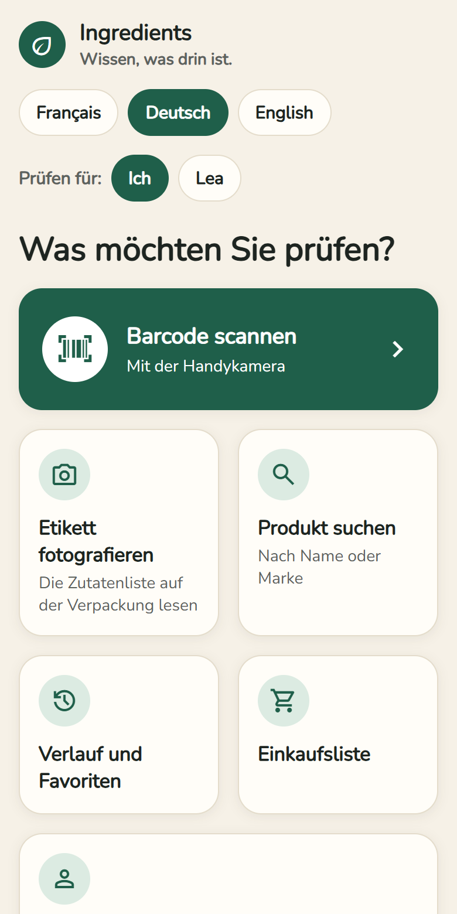
2Profile anlegen (einmalig)
Tippen Sie auf Mein Profil. Alles bleibt nur auf Ihrem Handy.
- Unter Profile gibt es schon „Ich“. Für eine weitere Person (z. B. ein Kind mit Allergie): Vornamen eintippen → Profil hinzufügen.
- Das grün markierte Profil ist das, das Sie gerade einstellen und das für alle Urteile gilt.
- Umbenennen ändert den Namen; „Profil … löschen“ entfernt es.
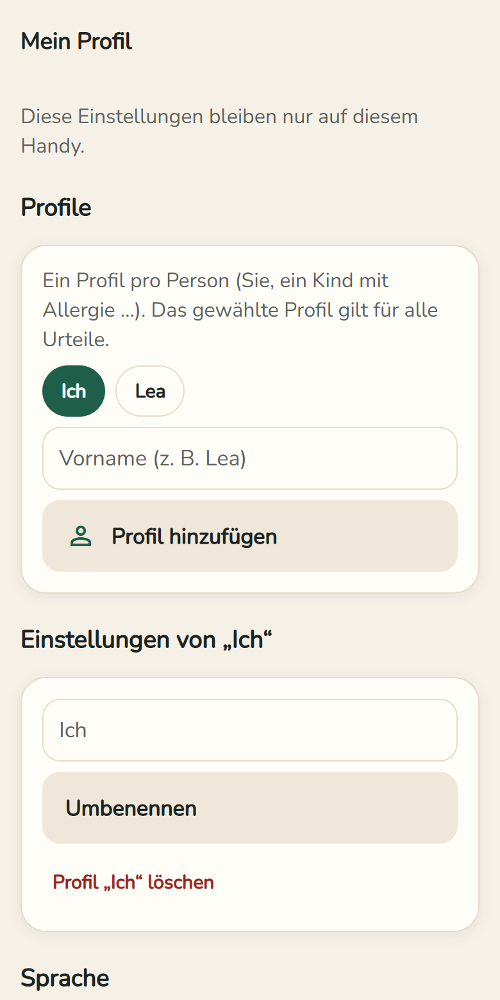
3Was ich meide, Allergien
- Was ich meide: Schalter Ohne Schwein und Alkohol, Vegetarisch, Vegan. Unter jedem Schalter steht genau, was geprüft wird.
- Allergien und Unverträglichkeiten: Tippen Sie die 14 EU-Allergene an, die Sie betreffen (Gluten, Milch, Erdnüsse, Schalenfrüchte …). Angetippte Allergene werden grün.
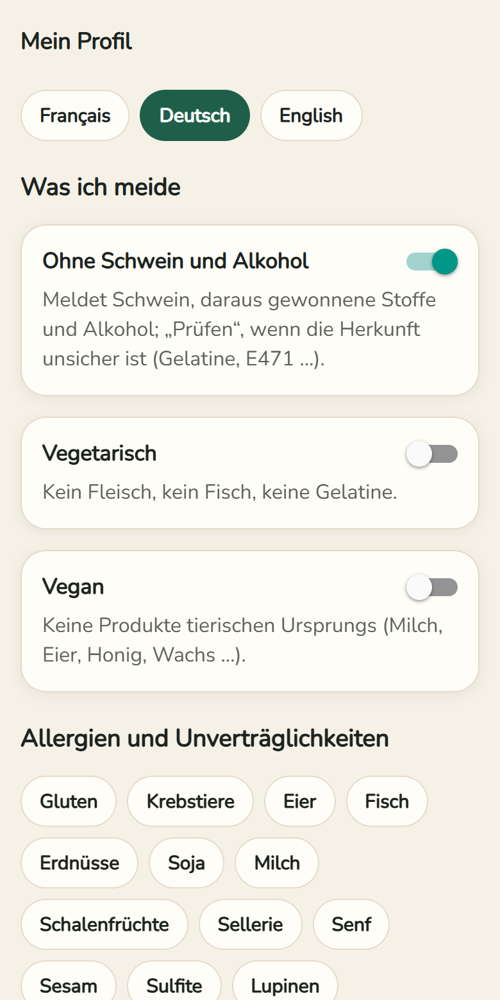
4Meine Gesundheit und Meine Regeln
- Meine Gesundheit: was Ihr Arzt Ihnen rät einzuschränken – Zucker (Diabetes …), Salz (Blutdruck …), Gesättigte Fettsäuren (Cholesterin …), Bedenkliche Zusatzstoffe. Ein Produkt mit hohem Gehalt wird dann „Prüfen“.
- Meine Regeln: ein eigenes Wort, nach dem gesucht wird, z. B. „Palmöl“. Wählen Sie Verboten oder Beobachten → Regel hinzufügen.
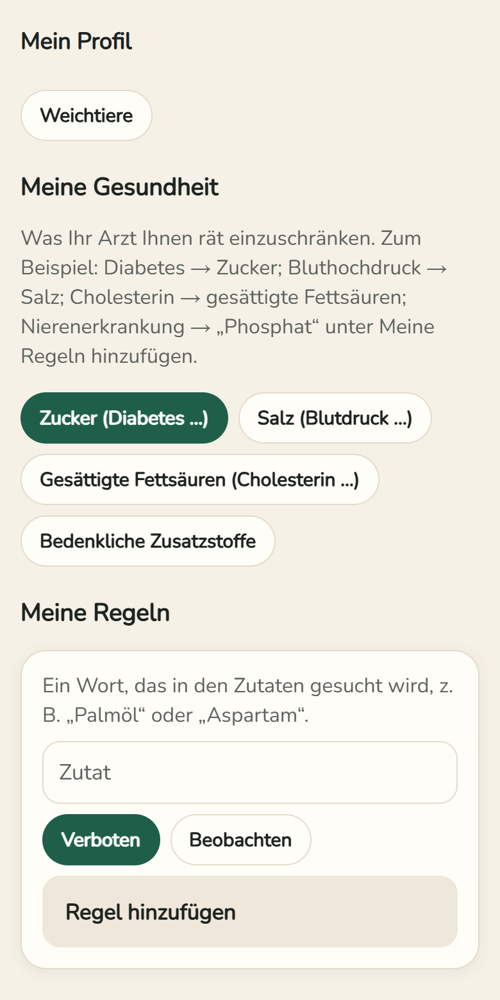
5Ein Produkt scannen
- Startseite → Barcode scannen.
- Beim ersten Mal: Kamera erlauben. Die Bilder werden weder gespeichert noch gesendet.
- Halten Sie den Barcode in den Rahmen – das Ergebnis öffnet sich von selbst.
- Kein Erfolg? Tippen Sie die Ziffern unter dem Barcode ein → Diesen Code prüfen.
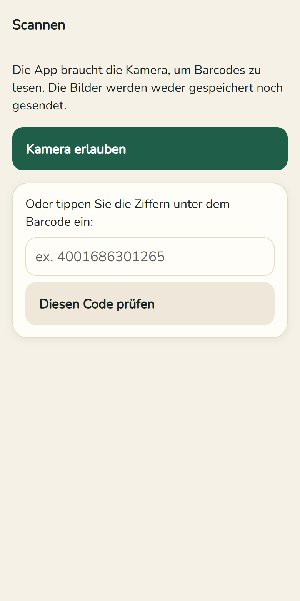
6Das Ergebnis lesen
- Oben: Foto, Name und Marke des Produkts.
- Drei Knöpfe: ☆ Favorit, + Einkaufsliste, ⇄ Vergleichen.
- Das Urteil in einer farbigen Karte: ✓ Geeignet, ! Prüfen, ✕ Nicht geeignet oder ? Unbekannt (keine Zutatenliste). Darunter die Verlässlichkeit (hoch, mittel, niedrig).
- Ergebnis vorlesen: Das Handy liest das Urteil laut vor.
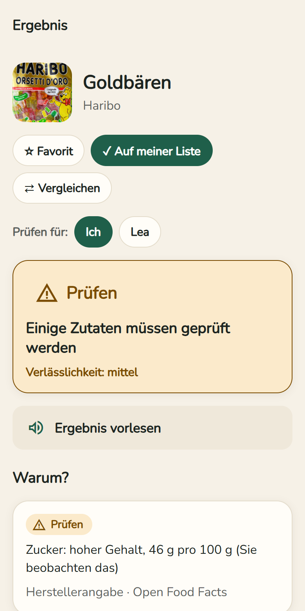
7Warum? und Alternativen
- Warum? listet jeden Grund für das Urteil auf, mit dem Wort, wie es auf der Verpackung steht, und der Quelle.
- „Prüfen“ heißt: Die Daten erlauben keine sichere Antwort (z. B. Gelatine ohne Angabe der Tierart). Schauen Sie auf die Verpackung oder fragen Sie den Hersteller.
- Alternativen für Sie: Passende Alternativen suchen zeigt Produkte derselben Kategorie, die zu Ihrem Profil passen und beim Problempunkt besser sind. Ohne Werbung: Keine Marke bezahlt dafür.
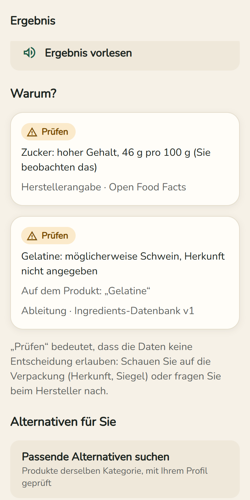
8Die hervorgehobene Zutatenliste
- rot = Sie meiden es · orange = prüfen · violett = Gesundheit: beobachten.
- Unterstrichen = Zutat mit Erklärung: antippen, um mehr zu erfahren.
- Gepunktet = Zutat, die die App noch nicht kennt.
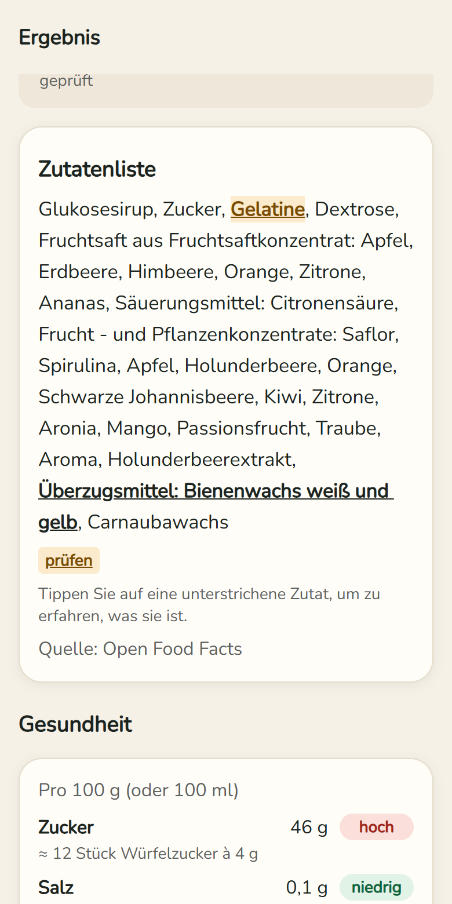
9Gesundheit
- Zucker, Salz, gesättigte Fettsäuren und Fett pro 100 g, mit niedrig / mittel / hoch.
- Zucker in Würfelzucker umgerechnet, Salz in % der Tageshöchstmenge der WHO.
- Darunter die Zutaten mit Gesundheitsrisiko, mit Stufe: Anerkanntes Risiko, Einschränken oder Umstrittenes Risiko, und deren Quellen (WHO, EFSA …).
- Ein gesundes Produkt bekommt Gute Wahl!
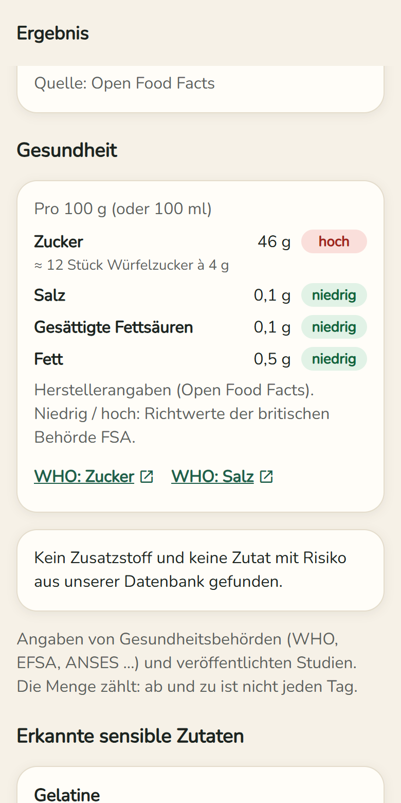
10Die Karte einer Zutat
Nach Antippen einer unterstrichenen Zutat:
- Was ist das? – einfache Erklärung.
- Andere Namen – wie sie sonst auf Etiketten steht (auch E-Nummern).
- Was das für Ihr Profil bedeutet und die Wirkung auf die Gesundheit.
- Mehr erfahren – Links zu Wikipedia und offiziellen Quellen.
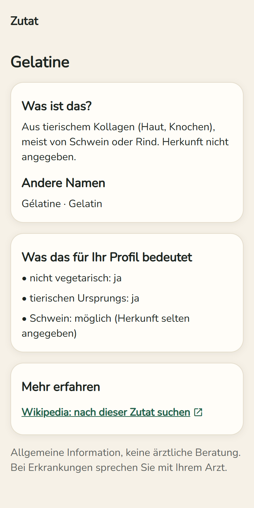
11Zwei Produkte vergleichen
- Bei einem Produkt: ⇄ Vergleichen.
- Das 2. Produkt scannen oder aus Ihren Produkten wählen.
- Beide stehen nebeneinander: Urteil, Zucker, Salz, Fett, bedenkliche Zusatzstoffe, Nutri-Score. Das bessere ist grün mit besser markiert. Unterschiede unter 10 % zählen nicht.
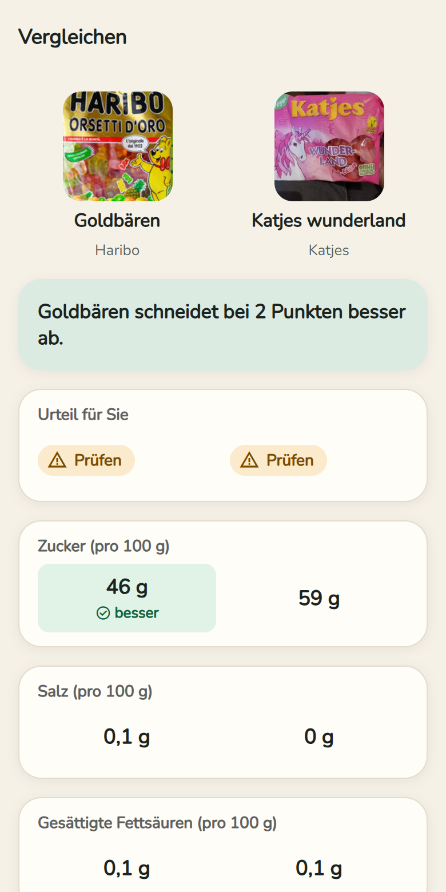
12Verlauf und Favoriten
- Startseite → Verlauf und Favoriten: alle aufgerufenen Produkte, auch ohne Internet lesbar.
- Filter: Alle / ★ Favoriten, nach Urteil (Empfohlen, Prüfen, Nicht empfohlen) und nach Kategorie (Milchprodukte, Getränke, Süßigkeiten …).
- Die Urteile werden mit dem gewählten Profil neu berechnet.
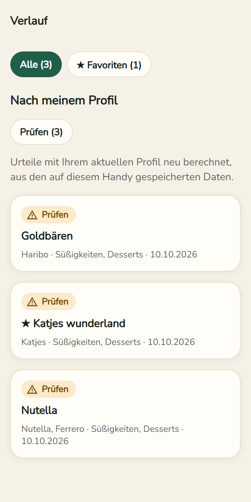
13Einkaufsliste
- Bei einem Produkt: + Einkaufsliste.
- Startseite → Einkaufsliste: Gekauftes abhaken.
- Liste senden: per WhatsApp, SMS oder E-Mail.
- Für jemand anderen einkaufen? Oben dessen Profil wählen: Ein roter Hinweis zeigt Artikel, die nicht passen.
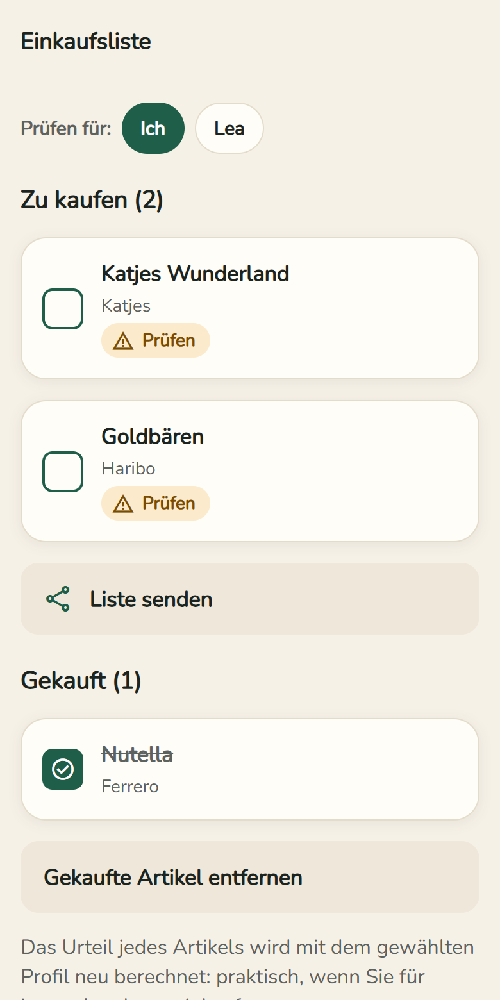
14Etikett fotografieren
Wenn ein Produkt unbekannt ist oder keine Zutatenliste hat:
- Etikett fotografieren (oder im Ergebnis Zutatenliste fotografieren).
- Den Absatz „Zutaten“ flach, scharf und gut beleuchtet fotografieren.
- Den gelesenen Text prüfen und falsche Buchstaben korrigieren → Analysieren bzw. Für dieses Produkt verwenden (wird fürs nächste Mal gespeichert).
15Ein Produkt zu Open Food Facts hinzufügen
Open Food Facts ist die freie Datenbank hinter der App. Wenn Sie ein fehlendes Produkt hinzufügen, wird es danach für alle erkannt.
- Unbekanntes Produkt: Dieses Produkt zu Open Food Facts hinzufügen. Produkt ohne Zutatenliste: Auf Open Food Facts ergänzen.
- Einmalig: ein kostenloses Konto auf openfoodfacts.org erstellen und in der App den Benutzernamen (nicht die E-Mail) und das Passwort eingeben. Sie bleiben verschlüsselt auf dem Handy.
- Fotos machen (Vorderseite, Zutaten, Nährwerte), den Text prüfen, der freien Lizenz zustimmen → An Open Food Facts senden.
16Fehler melden, Updates, alles löschen
- Fehler melden (unten in jedem Ergebnis): Ihre Mail-App öffnet sich mit einer fertigen E-Mail. Ihr Profil wird nie mitgeschickt.
- Updates kommen von selbst: Erscheint „Eine neue Version der App ist bereit“, tippen Sie auf Neu starten.
- Mein Profil → Meine Daten → Alles löschen: Profile, Verlauf, Favoriten, Einkaufsliste und Konto werden vom Handy gelöscht.
Teil C — Gut zu wissen
- Die App ersetzt weder die Verpackung noch Ihren Arzt noch eine religiöse Autorität. Sie zertifiziert nichts. Bei schwerer Allergie immer das Etikett lesen.
- Wenn sie etwas nicht weiß, sagt sie es („Unbekannt“, niedrige Verlässlichkeit).
- Keine Werbung, kein Pflichtkonto. Produktdaten: Open Food Facts (Lizenz ODbL). Zum Lesen von Fotos wird das Bild an den Dienst OCR.space gesendet; Ihr Profil nie.
- Fragen oder Ideen? Schreiben Sie an draboibro@gmail.com.